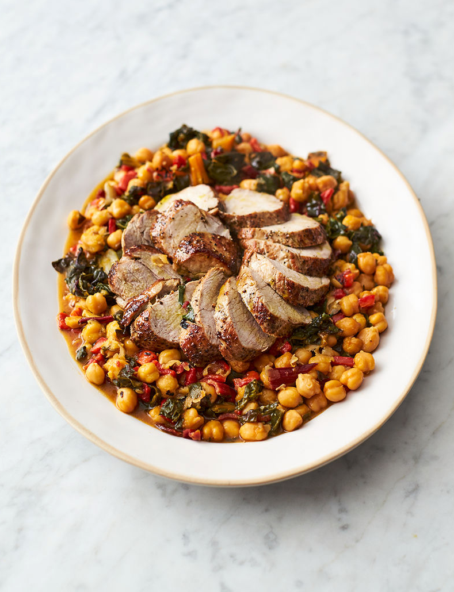
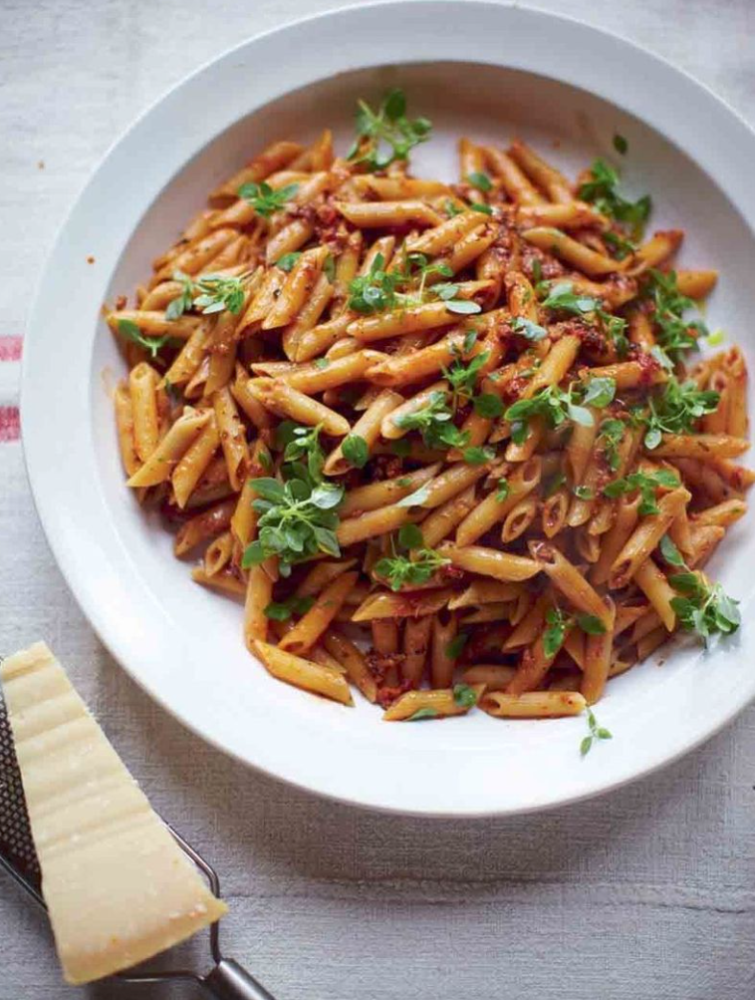

my food blog
Quinoa Crunch Salad

Ingredients
Salad
- 2-3 cups shelled edamame
- 2 cups Quinoa
- 1 cucumber, diced
- 1-2 bell peppers, diced
- 2 ripe mangoes, diced
- 3 carrots, shredded
- half of head of purple cabbage, shredded
- sliced almonds, penauts and cashewes
Dressing
- 1/2 cup Creamy Peanut Butter
- 1/3 cup soy sauce
- 1/3 cup vinegar
- 1/4 cup sesame oil
- 1-2 tablespoon chili paste
- 2 tablespoons honey
- 1 clove garlic
- 1 knob of fresh ginger, peeled
Instructions
- Cook the quinoa and edamame according to package directions.
- Chop veggies up. It will take a little while. Put on some good music and light candle and a glass of wine wouldn't hurt.
- Mix all the dressing ingrediends in a blender.
- Assemble individual salads, or toss it all together.
Superfood salad
Ingredients
- 2 sweet potatoes
- 1 pinch of dried chilli flakes
- 1 pinch of ground coriander
- olive oil
- 200 g quinoa
- 320 g broccoli
- 35 g mixed nuts
- 1 splash of balsamic vinegar
- 2 limes
- 1 pomegranate
- 1 punnet of salad cress
- 1 ripe avocado
- feta cheese
- 1 fresh red chilli
- 1 bunch of fresh coriander
Instructions
- Preheat the oven to 200°C.
- Scrub and chop the sweet potatoes into 2.5cm chunks. Place into a roasting tray with the chilli flakes, ground coriander, a drizzle of olive oil and a little sea salt and black pepper, then toss well. Spread out into an even layer and place in the hot oven for 15 to 20 minutes, or until golden and crisp.
- Meanwhile, cook the quinoa in boiling salted water according to the packet instructions.
- Slice the broccoli into small florets, then halve and finely slice the stalk. Place into a heatproof colander and rest it over the quinoa pan. Cover and steam for 3 minutes, or until just tender.
- Meanwhile, toast the nuts in a dry frying pan over a medium-high heat for 2 to 3 minutes, then transfer to a pestle and mortar and crush lightly.
- Halve the pomegranate and squeeze half the juice into a large bowl. Add 3 times as much extra virgin olive oil, the lime juice and balsamic vinegar. Whisk well and season to taste.
- Add the cooled broccoli and sprouts to the dressing, then snip in the cress. Roughly chop the coriander (stalks and all), finely slice the chilli and add to the bowl along with the quinoa and sweet potato.
- Toss well, spread out on a serving platter, then scoop out and dot over the avocado flesh.
- Bash the reserved pomegranate half with a wooden spoon so the seeds come tumbling out and scatter these over the platter along with the nuts, snip the cress on top, then serve with the feta crumbled over the top.
Chickpea hard pork

Ingredients
- 400 g piece of higher-welfare pork filet
- 480 g jar of roasted peeled peppers in brine
- 300 g rainbow chard
- 1 heaped teaspoon fennel seeds
- 660 g jar of chickpeas
Instructions
- Put a large shallow casserole pan on a high heat. Season the pork with sea salt and black pepper, then place in the pan with 1 tablespoon of olive oil and sear for 5 minutes, turning halfway.
- Meanwhile, drain the peppers and quickly dice into 1cm chunks, then trim and finely slice the chard, stalks and all.
- Remove the pork to a plate, then add the fennel seeds, peppers and all the chard to the pork fat left behind in the pan. Stir and fry for 2 minutes, then pour in the chickpeas and their juice, stir, and bring to the boil.
- Sit the pork back in so it’s touching the base of the pan, pour over any resting juices, cover, and simmer gently on a medium heat for 12 minutes, or until the pork is just cooked through and it all smells incredible, turning the pork occasionally.
- Rest for 2 minutes, slice the pork, season the chickpeas to perfection, adding a splash of red wine vinegar, drizzle with extra virgin olive oil, and serve.
Peachy pork chops
Ingredients
- 2 x 250 g higher-welfare pork chops, with rind
- 4 cloves of garlic
- 2 springs of fresh rosemary
- 410 g tin of peach halves in juice
- 50 ml bourbon
Instructions
- Preheat the grill to high.
- Slice the rind off the chops, score the fat side of it in a criss-cross fashion and place skin side up in a tray. Pop under the grill for 5 minutes to crisp up into crackling – keep an eye on it.
- Season the chops with sea salt and black pepper, score the remaining fat in a criss-cross fashion, then sit the chops together fat edges down in a large cold non-stick frying pan.
- Place on a high heat for 3 to 4 minutes, or until golden and the fat has rendered out, using tongs to ensure they’re in good contact with the pan. Gently turn the chops on to their sides to cook for 5 minutes on each side.
- Meanwhile, peel and finely slice the garlic. Strip the rosemary leaves off the sprigs.
- Remove the chops to a plate, drain 90% of the fat from the pan into a jar to use for cooking another day, then sprinkle the garlic into the pan. Stir regularly until golden, then add the rosemary and four drained peach halves, flat side down.
- Jiggle over the heat until golden, then return the chops to the pan, add the bourbon and carefully set fire to it with a match (stand back!).
- Once the flames begin to subside, dish up with the crispy crackling.
The Best Easy Pasta Salad
Ingredients
Salad
- 1 pound uncooked pasta
- 3 cups cherry tomatoes, cut in half
- 8 ounces fresh mozzarella cheese balls, cut in half
- 1 lb. salami or summer sausage, cut into cubes
- 3/4 cup kalamata olives, sliced
- 3/4 cups pepperoncini
- 1/2 cup sliced red onion
- 1/2 cup fresh parsley, chopped
Dressing
- 1 1/2 cups olive oil
- 1/4 cup white vinegar
- 1/4 cup water
- 2 cloves garlic
- 1 tablespoon sugar
- 2 tablespoon coarse sea salt
- black pepper to taste
Instructions
- Cook pasta according to package directions, in salted water for more flavor. Allow to cool slightly and toss with a little oil to prevent sticking.
- Blend up the dressing, or shake together in a jar.
- Toss all ingredients together! I like to use about three-fourths of the dressing, and then I save the rest of the dressing to add to my leftovers.
- Keep in the fridge for 2-3 days. I think it actually tastes best the day AFTER you make it.
Coconut Curry Salmon
Ingredients
Salmon
- 1 1/2 lbs. salmon
- 1 tablespoon brown sugar
- 1 teaspoon curry powder
- 1/2 teaspoon onion powder
- 1/2 teaspoon garlic powder
- 1/2 teaspoon kosher salt
- 1-2 teaspoons olive oil
Sauce
- 1 tablespoon olive oil
- 2 cloves garlic
- 1 small knob of ginger
- 1 tablespoon brown sugar
- 1 tablespoon red curry paste
- 1 can coconut milk
- 2 tablespoons fish sauce or soy sauce
- lots of lime juice and zest
- 3 cups fresh spinach, chopped
- cilantro, basil, mint or other fresh herbs
Instructions
- Preheat the oven to 220°C. Line a baking sheet with foil. Place one of the oven racks close-ish to the top, about 6 inches or so.
- Mix the spices and the olive oil to make a paste. Place the salmon skin side down on the baking sheet. Rub the paste liberally over the top part of the salmon. Bake for 6-12 minutes (depends on salmon thickness and desired doneness – I usually opt for 8-10 minutes). See notes and FAQs for potential broiling issues and alternative methods.
- Heat the olive oil over medium heat to prepare sauce. Add garlic, ginger, and lemongrass; sauté for 5 minutes. Add brown sugar and curry paste; sauté for 3 minutes. Add coconut milk. Season with fish sauce and lime juice to taste. Add spinach; stir into the sauce until wilted.
- Place salmon over rice. Cover with sauce, lime juice, and fresh herbs.
Thai-style crispy sea bass
Ingredients
- 4 spring onions
- 1/2 a bunch of fresh coriander
- 2x 300 g whole sea bass, scaled, gutted, trimmed, from sustainable sources
- 2 tablespoons Thai red curry paste
- 1 lime
Instructions
- Trim and halve the spring onions, finely shred lengthways and place in a bowl of ice-cold water to crisp up. Pick in the coriander leaves, reserving the stalks.
- Place a large non-stick frying pan on a medium-high heat.
- With a sharp knife, score the sea bass skin at 2cm intervals, then rub all over with the curry paste, inside and out, getting into all the cracks and crannies.
- Pack the coriander stalks into the cavities, season with sea salt and black pepper, then place in the hot pan with 1 tablespoon of olive oil.
- Cook for 3 to 4 minutes per side, or until dark golden and cooked through (depending on the thickness of your fish).
- Drain and shake off the spring onions and coriander and pile on to your plates.
- Sit the sea bass on top, spooning over any spicy oil from the pan. Finely grate over the lime zest, and serve with lime halves, for squeezing over.
Quick seafood pasta
Ingredients
- 300 g dried linguine
- 250 g squid, gutted, cleaned, from sustainable sources
- 250 g mussels, scrubbed, debearded, from sustainable sources
- 250 g cockles or clams, scrubbed, from sustainable sources
- 4 scallops with roe attached, from sustainable sources
- 1 clove garlic
- 1 bunch of fresh flat-leaf parsley
- 1 lemon
- 1 fresh red chilli
- olive oil
- 1 tablespoon baby capers
- 400 g tin of quality plum tomatoes
- 20 g Parmesan cheese
Instructions
- Cook 300g of dried linguine in a large pan of boiling salted water according to the packet instructions, then drain, reserving a mugful of starchy water.
- Meanwhile, slice 250g of squid into 1cm rings, sort through 250g of mussels and 250g of cockles (or clams), giving any that aren’t tightly closed a tap. If they don’t close, discard them. Slice the 4 scallops.
- Peel and finely slice 1 clove of garlic, pick and finely chop 1 bunch of fresh flat-leaf parsley (30g), and finely grate the zest of ½ a lemon. Trim and finely chop 1 fresh red chilli (if using).
- Place a large non-stick pan on a medium-high heat with 1 tablespoon of olive oil. Add the garlic, chilli and 1 tablespoon of baby capers, cook for 1 minute, then add the clams and mussels. Cook for a couple of minutes, then add the squid, scallops, lemon zest and parsley, and give it a good stir.
- Scrunch in 1 x 400g tin of plum tomatoes through your clean hands, bring to the boil, then reduce the heat and simmer for 2 minutes to let the flavours mingle, stirring regularly and breaking up the tomatoes.
- Stir in 1 handful of samphire (if using) and squeeze in the juice of ½ a lemon. Give the pan a jiggle and simmer for 1 minute more, or until perfectly cooked (discarding any shells that remain closed).
- Remove the pan from the heat and carefully pick the meat out of the shells, if you like.
- Grate in 20g of Parmesan, then taste and season to perfection, adding an extra squeeze of lemon juice, if needed.
- Toss the pasta into the sauce, loosening with a splash of pasta water, if needed, then finish with a kiss of extra virgin olive oil.
Sausage and fennel pasta

Ingredients
- 4 spring onions
- 1 carrot
- 1 stick of celery
- 1-2 fresh red chilli
- 400 g higher-welfare sausages
- 1 heaped teaspoon fennel seeds
- 1 teaspoon dried oregano
- olive oil
- 500 g dried penne
- 4 cloves of garlic
- 4 tablespoons balsamic vinegar
- 400 g tin of chopped tomatoes
- 20 g Parmesan cheese
Instructions
- Trim the spring onions, carrot and celery. Roughly chop all the vegetables, then blitz in the food processor with the chillies (stalks removed). Add the sausages, 1 heaped teaspoon of fennel seeds and 1 teaspoon of oregano. Keep pulsing until well mixed, then spoon this mixture into a large frying pan on a high heat with a lug of olive oil, breaking it up and stirring as you go. Keep checking on it and stirring while you get on with other jobs.
- Fill a large deep saucepan with boiling water. Season well then add the penne and cook according to packet instructions, with the lid askew.
- Crush 4 unpeeled cloves of garlic into the sausage mixture and stir in 4 tablespoons of balsamic vinegar and the tinned tomatoes. Add a little of the starchy cooking water from the pasta to loosen if needed.
- Drain the pasta, reserving about a wineglass worth of the cooking water. Tip the pasta into the pan of sauce and give it a gentle stir, adding enough of the cooking water to bring it to a silky consistency. Taste, correct the seasoning, then tip into a large serving bowl and take straight to the table with the Parmesan for grating over. Scatter over a few basil leaves.
Garlic mushroom pasta
Ingredients
- 150 g dried trofie, or fusilli
- 2 cloves of garlic
- 250 g mixed mushrooms
- 25 g Parmesam cheese
Instructions
- Cook the pasta in a pan of boiling salted water according to the packet instructions, then drain, reserving a mugful of cooking water.
- Meanwhile, peel and finely slice the garlic. Place it in a large non-stick frying pan on a medium-high heat with ½ a tablespoon of olive oil, followed 1 minute later by the mushrooms, tearing up any larger ones.
- Season with sea salt and black pepper, and cook for 8 minutes, or until golden, tossing regularly.
- Toss the drained pasta into the mushroom pan with a splash of reserved cooking water.
- Finely grate in most of the Parmesan, stir in the crème fraîche, taste, season to perfection, and dish up, finishing with a final grating of Parmesan.